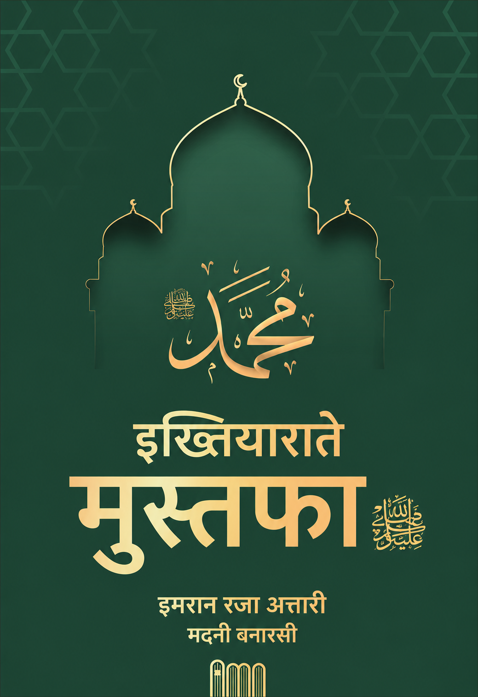

इख़्तियाराते मुस्तफ़ा ﷺ
Hindi Transliteration
इख़्तियाराते मुस्तफ़ा ﷺ
फ़ेहरिस्त
ख़ुत्बा ......................................................................... 2
हज़रत अली को हालते जनाबत में मस्जिद में आने की इजाज़त ........................................................................... 37
क़ुर्बानी में तख़फ़ीफ़ ................................................... 38
बादलों पर हुकूमत ....................................................... 50
ख़ुत्बा
शहंशाहे दो आलम, मालिके कौनो मकाँ, रसूलुल्लाह ﷺ को अल्लाह पाक ने मुख़्तारे काइनात बना कर दुनिया में मबऊस फ़रमाया। चरिंदो परिंद, ज़मीनो आसमान, सूरज व चाँद और सितारे, संगो शजर, अलग़रज़ काइनात की हर चीज़ आप ﷺ के इख़्तियार में कर दी, हर चीज़ पर आपका हुक्म लाज़िम व नाफ़िज़ फ़रमा दिया।
कैसे कैसे इख़्तियारात अता फ़रमाए कि इशारा करें चाँद दो टुकड़े हो जाए, डूबे हुए सूरज को हुक्म फ़रमाएँ तो वापस पलट आए, दरख़्त को हुक्म हो तो अपनी जड़ों को उखाड़ते हुए बारगाहे अक़दस में हाज़िर हो जाए, हिलते हुए उहुद के पहाड़ को क़दमे अक़दस से ठोकर देते हुए हुक्म करें तो फ़ौरन ठहर जाए, जिस पर जो चाहें हराम फ़रमा दें, जिसके लिए जो चाहें हलाल फ़रमा दें।
अलग़रज़ हर तरह के इख़्तियारात आप ﷺ को अता किए गए।
इमामे अहले सुन्नत, आला हज़रत رحمة الله تعالى عليه फ़रमाते हैं:
हुज़ूर तमाम मलको मलकूत पर अल्लाह عز وجل के नाइबे मुतलक़ हैं, जिन को रब्बे عز وجل ने अपने अस्मा व सिफ़ात असरार का ख़िलअत पहनाया और हर मुफ़रद व मुरक्कब में तसर्रुफ़ का इख़्तियार दिया है। दूल्हा बादशाह की शान दिखाता है, उसका हुक्म बरात में नाफ़िज़ होता है, सब उसकी ख़िदमत करते हैं और अपने काम छोड़ कर उसके काम में लगे होते हैं। जिस बात को उसका जी चाहे मौजूद हो जाती है, चैन में होता है, सब बराती उसकी ख़िदमत में और उसके तुफ़ैल में खाना पाते हैं। यूँही मुस्तफ़ा ﷺ आलम में बादशाहे हक़ीक़ी عز وجل की शान दिखाते हैं, तमाम जहान में उनका हुक्म नाफ़िज़ है, सब उनके ख़िदमतगार व ज़ेरे फ़रमान हैं, जो चाहते हैं अल्लाह عز وجل मौजूद कर देता है।
सहीह बुख़ारी की हदीस में है:
उम्मुल मोमिनीन हज़रते आइशा सिद्दीक़ा رضي الله تعالى عنها हुज़ूर عليه السلام से अर्ज़ करती हैं:
मैं हुज़ूर के रब को देखती हूँ कि हुज़ूर की ख़्वाहिश में शिताबी फ़रमाता है।
(सहीह बुख़ारी, जिल्द 6, सफ़हा 117, हदीस 4788)
तमाम जहान हुज़ूर के सदक़ा में हुज़ूर का दिया खाता है। दूसरी हदीस शरीफ़ में है:
हुज़ूर पुर नूर ﷺ फ़रमाते हैं: "हर नेमत का देने वाला अल्लाह है और बाँटने वाला मैं हूँ।"
(सहीह बुख़ारी, जिल्द 9, सफ़हा 101, हदीस 7312)
यूँ तशबीह कामिल हुई और हुज़ूर عليه السلام सल्तनते इलाही के दूल्हा ठहरे।
(फ़तावा रज़विय्या, 15/291)
आला हज़रत رحمة الله تعالى عليه फ़रमाते हैं:
सद्रुश्शरीअह मुफ़्ती अमजद अली आज़मी رحمة الله تعالى عليه बड़े ही अछूते अंदाज़ में बयान फ़रमाते हैं:
हुज़ूर ﷺ अल्लाह عز وجل के नाइबे मुतलक़ हैं। तमाम जहान हुज़ूर ﷺ के तहते तसर्रुफ़ कर दिया गया। जो चाहें करें, जिसे चाहें दें, जिससे जो चाहें वापस लें। तमाम जहान में उनके हुक्म का फेरने वाला कोई नहीं। तमाम जहान उनका महकूम है, और वो अपने रब के सिवा किसी के महकूम नहीं। तमाम आदमियों के मालिक हैं। जो उन्हें अपना मालिक न जाने हलावते सुन्नत से महरूम रहे। तमाम ज़मीन उनकी मिल्क है, तमाम जन्नत उनकी जागीर है। मलकूतुस समावाती वल अर्द हुज़ूर ﷺ के ज़ेरे फ़रमान। जन्नतो नार की कुंजियाँ दस्ते अक़दस में दे दी गईं। रिज़्क़ो ख़ैरात और हर क़िस्म की अताएँ हुज़ूर ﷺ ही के दरबार से तक़सीम होती हैं। दुनिया व आख़िरत हुज़ूर ﷺ की अता का एक हिस्सा है। अहकामे तशरीइया हुज़ूर ﷺ के क़ब्ज़े में कर दिए गए, कि जिस पर जो चाहें हराम फ़रमा दें और जिसके लिए जो चाहें हलाल कर दें और जो फ़र्ज़ चाहें मुआफ़ फ़रमा दें।
(बहारे शरीअत, जिल्द 1, हिस्सा 1, सफ़हा 82)
अल्लामा अबू जाफ़र तहावी हनफ़ी رحمة الله تعالى عليه फ़रमाते हैं:
हुज़ूर عليه السلام को इस बात का इख़्तियार था ही कि जिसके साथ जो चाहें ख़ास फ़रमा दें और जिस पर जो चाहें हराम फ़रमा दें।
(शर्ह मुआनीयुल आसार, जिल्द 3, सफ़हा 299)
इमाम शहाबुद्दीन क़स्तलानी शाफ़ई ने अपनी मशहूरो मारूफ़ किताब मवाहिबे लदुन्या में हुज़ूर عليه السلام के ख़ास फ़ज़ाइल पर पूरा एक बाब बाँधा है। आप के ख़साइस में ये भी है कि आप जिस हुक्म को जिसके साथ चाहें ख़ास फ़रमा दें। इसमें हुज़ूर عليه السلام की तशरीई अहकाम में इख़्तियार को बयान फ़रमाया है।
शैख़ मुहक़्क़िक़ अब्दुल हक़ मुहद्दिसे देहलवी رحمة الله تعالى عليه फ़रमाते हैं:
अहकाम आपके सुपुर्द किए गए हैं, जो चाहें हुक्म फ़रमाएँ और जिसके साथ जो चाहें ख़ास फ़रमा दें।
(लमआत शर्ह मिश्कात, जिल्द 8, सफ़हा 256)
अल्लामा अब्दुल हई लखनवी हनफ़ी رحمة الله تعالى عليه लिखते हैं:
हुज़ूर ﷺ को इस बात का इख़्तियार था कि जो हुक्म जिसके साथ चाहें ख़ास फ़रमा दें।
(अत-तालीक़ुल मुमज्जद, जिल्द 2, सफ़हा 605)
इनके इलावा कसीर उलमा-ए-किराम ने इस बात को अपनी तसानीफ़ में ज़िक्र किया है, मगर यहाँ इख़्तिसार के पेशे नज़र इसी पर इक्तिफ़ा किया जाता है।
आला हज़रत رحمة الله تعالى عليه फ़रमाते हैं:
अहकामे इलाही की दो क़िस्में हैं:
तकवीनीया, मिस्ले इहया व अमातत, क़ज़ा-ए-हाजत, दफ़ा-ए-मुसीबत, अता-ए-दौलत, रिज़्क़ो नेमत, फ़तह व शिकस्त वग़ैरहा, आलम के बंदोबस्त।
दूसरे तशरीइया, कि किसी फ़ेल को फ़र्ज़ या हराम या वाजिब या मकरूह या मुस्तहब या मुबाह कर देना। मुसलमानों के सच्चे दीन में इन दोनों हुक्मों की एक ही हालत है कि ग़ैरे ख़ुदा की तरफ़ बर वजह ज़ाती अहकामे तशरीई की असनाद भी शिर्क, और बर वजह अताई उमूरे तकवीन की असनाद भी शिर्क नहीं।
(फ़तावा रज़विय्या, जिल्द 19, सफ़हा 235)
अल्लाह पाक ने अपने महबूबे अकरम ﷺ को दोनों मुआमले में कामिल इख़्तियारात अता फ़रमाए हैं, जैसा कि मा क़बल मज़कूर हुआ और आगे चल कर भी इस पर क़ुरआनो हदीस से दलाइल मज़कूर होंगे।
अमीरे अहले सुन्नत, हज़रत अल्लामा मौलाना इलयास अत्तार क़ादिरी حفظه الله تعالى फ़रमाते हैं:
अक़ीदा दयाबना वहाबिया
तक़वियतुल ईमान में है:
यूँ न बोले कि अल्लाह व रसूल चाहेगा तो फ़ुलाँ काम हो जाएगा, कि सारा कारोबार जहान का अल्लाह ही के चाहने से होता है, रसूल के चाहने से कुछ नहीं होता।
(तक़वियतुल ईमान, सफ़हा 84)
इसी में सफ़हा 29 पर है:
अल्लाह तआला ने किसी को आलम में तसर्रुफ़ करने की क़ुदरत नहीं दी। मजीद लिखा: आलम में इरादा से तसर्रुफ़ करना, और अपना हुक्म जारी करना, और अपनी ख़्वाहिश से मारना और जिलाना, रोज़ी की कुशाइश और तंगी करनी, और तंदुरुस्त और बीमार कर देना, फ़तह व शिकस्त देनी, इक़बाल व अदबार देना, मुरादें पूरी करनी, हाजतें बर लानी, बलाएँ टालनी, मुश्किल में दस्तगीरी करनी, बुरे वक़्त में पहुँचना, ये सब अल्लाह की शान है। और किसी अंबिया और औलिया की, पीर व शहीद की, भूत व परी की ये शान नहीं। जो कोई किसी को ऐसा तसर्रुफ़ साबित करे और उससे मुरादें माँगें और उस मौक़े पर नज़रो नियाज़ करे और उसकी मन्नतें माने और उसको मुसीबत के वक़्त पुकारे, सो वो मुश्रिक हो जाता है।
(तक़वियतुल ईमान, सफ़हा 36)
अल्लाह पाक ने अंबिया और उनके वसीले से औलिया-ए-किराम को इतनी ताक़तें व इख़्तियारात अता फ़रमाए हैं कि मुश्किल में लोगों की मदद करें, परेशानियाँ दूर करें, आलम में उसके हुक्म से अपना हुक्म नाफ़िज़ करें, जो चाहें हराम करें, जो चाहें जाइज़। मगर इसने इन तमाम इख़्तियारात का इन्कार कर दिया जिसका क़ुरआनो हदीस में वाज़ेह सुबूत है।
इन काफ़िरो व मुर्तदो के इस अक़ीदे के रद्द में क़ुरआनो हदीस से दलाइल पेश किए जाते हैं, जिनको पढ़ कर अंदाज़ा होगा कि इनके ये मरदूद अक़ाइद ख़ुद के गढ़े हुए हैं।
1. पारह 12, सूरह अहज़ाब, आयत नं. 36 में इरशाद होता है:
और किसी मुसलमान मर्द न मुसलमान औरत को पहुँचता है कि जब अल्लाह व रसूल कुछ हुक्म फ़रमा दें तो उन्हें अपने मुआमले का कुछ इख़्तियार रहे, और जो हुक्म न माने अल्लाह और उसके रसूल का वो बेशक सरीह गुमराही बहका।
शाने नुज़ूल:
मुफ़स्सिरीन फ़रमाते हैं कि हुज़ूर ﷺ ने इस्लाम का सूरज तुलू होने से पहले हज़रते ज़ैद बिन हारिसा رضي الله تعالى عنه को ख़रीद कर आज़ाद फ़रमाया और उन्हें अपना मुँह बोला बेटा बना लिया था। हज़रते ज़ैनब बिन्ते जहश, जो हुज़ूर عليه السلام की फूफी उमैमा बिन्ते अब्दुल मुत्तलिब की बेटी थीं, हुज़ूर عليه السلام ने उन्हें हज़रते ज़ैद से निकाह का पैग़ाम दिया। शुरू में तो ये इस गुमान से राज़ी हो गईं कि हुज़ूर عليه السلام ने अपने लिए पैग़ाम दिया है। लेकिन जब मालूम हुआ कि हज़रते ज़ैद के लिए रिश्ता तलब फ़रमाया है तो इन्कार कर दिया और अर्ज़ कर भेजा कि या रसूलल्लाह ﷺ! मैं हुज़ूर عليه السلام की फूफी की बेटी हूँ, इसलिए ऐसे शख़्स के साथ निकाह पसंद नहीं करती। उनके भाई अब्दुल्लाह बिन जहश ने भी इसी बिना पर इन्कार किया। इस पर ये आयते करीमा नाज़िल हुई। इसे सुन कर दोनों बहन भाई राज़ी हो गए और हज़रते ज़ैनब का हज़रते ज़ैद से निकाह हो गया।
(तफ़सीरे क़ुर्तुबी, जिल्द 14, सफ़हा 146)
मालूम हुआ कि हर शख़्स पर हुज़ूर ﷺ का हुक्म मानना फ़र्ज़ है, इससे इन्कार की गुंजाइश नहीं।
2. सूरह-ए-निसा, आयत 65 में फ़रमाया:
तो ऐ महबूब, तुम्हारे रब की क़सम वो मुसलमान न होंगे जब तक अपने आपस के झगड़े में तुम्हें हाकिम न बताएँ, फिर जो कुछ तुम हुक्म फ़रमा दो अपने दिलों में उससे रुकावट न पाएँ और जी से मान लें।
इस आयत का शाने नुज़ूल बुख़ारी शरीफ़ में इस तरह बयान किया गया है कि अहले मदीना पहाड़ से आने वाले पानी से बाग़ों में आबपाशी करते थे। वहाँ एक अंसारी का हज़रते ज़ुबैर رضي الله تعالى عنه से झगड़ा हुआ कि कौन पहले अपने खेत को पानी देगा।
ये मुआमला हुज़ूर عليه السلام के हुज़ूर पेश किया गया। सरकारे मदीना ﷺ ने इरशाद फ़रमाया: ऐ ज़ुबैर! तुम अपने बाग़ को पानी दे कर अपने पड़ोसी की तरफ़ पानी छोड़ दो। हज़रते ज़ुबैर को पहले पानी की इजाज़त इसलिए दी गई क्योंकि उनका खेत पहले आता था, मगर साथ ही हुज़ूर عليه السلام ने अंसारी के साथ भी एहसान करने का हुक्म दिया। लेकिन मजमूई फ़ैसला अंसारी को नागवार गुज़रा और उनकी ज़ुबान से ये जुमला निकला कि ज़ुबैर आपके फूफी ज़ाद भाई हैं। बावजूद इसके कि फ़ैसला में हज़रते ज़ुबैर को अंसारी के साथ एहसान की हिदायत फ़रमाई गई थी, लेकिन अंसारी ने इसकी क़द्र न की, तो हुज़ूर عليه السلام ने हज़रते ज़ुबैर رضي الله تعالى عنه को हुक्म दिया कि अपने बाग़ को सैराब कर के पानी रोक लो। इस पर ये आयत नाज़िल हुई।
(सहीह बुख़ारी, जिल्द 3, सफ़हा 187, हदीस 4585)
इस आयत में साफ़ फ़रमा दिया गया कि लोगों पर ज़रूरी है कि अपने मुआमलात में आप عليه السلام को हाकिम व फ़ैसल बनाएँ, और आप जिस चीज़ का फ़ैसला फ़रमा दें उस पर अमल किया जाए।
3. सूरह-ए-बक़रह, आयत 29 में रब्बे عز وجل फ़रमाता है:
लड़ो उनसे जो ईमान नहीं लाते अल्लाह पर और क़ियामत पर, और हराम नहीं मानते उस चीज़ को जिसको हराम किया अल्लाह और उसके रसूल ने।
हज़रते मिक़दाम बिन माद यकरब رضي الله تعالى عنه से रिवायत है कि रसूलुल्लाह ﷺ ने फ़रमाया: लोगों याद रखो! क़ुरआन ही की तरह एक और चीज़, यानी हदीस, मुझे अल्लाह तआला की तरफ़ से दी गई है। ख़बरदार, एक वक़्त आएगा एक पेट भरा, यानी मुतकब्बिर शख़्स, अपनी मसनद पर तकिया लगाए बैठा होगा और कहेगा: लोगो, तुम्हारे लिए ये क़ुरआन ही काफ़ी है। इसमें जो चीज़ हलाल है बस वही हलाल है और जो चीज़ हराम वही हराम है। हालाँकि ऐसा नहीं है।
(मुस्नद शामीन तबरानी, जिल्द 3, सफ़हा 103, हदीस 1984)
मोजमे कबीर की रिवायत में इतना इज़ाफ़ा है:
ख़बरदार! बेशक जो रसूलुल्लाह ﷺ ने हराम फ़रमाया वो भी इसी तरह हराम है जैसा कि अल्लाह ने हराम फ़रमाया।
(मोजमे कबीर, जिल्द 20, सफ़हा 274, हदीस 649)
रवाफ़िज़ व ख़वारिज और चकड़ालवी ये लोग सिर्फ़ क़ुरआन को मानने का दावा करते हैं और हदीस के मुन्किर हैं। इनका कहना है कि معاذ الله, रसूलुल्लाह ﷺ किसी चीज़ को हलाल या हराम करने का इख़्तियार नहीं रखते। बस जो क़ुरआन में हलाल है उसी को हलाल मानो, जो क़ुरआन में हराम है उसी को हराम मानो। इस हदीस में इनका रद्द फ़रमाया गया।
मज़कूरा आयते करीमा और हदीसे पाक से ये मालूम हुआ कि आप की जो अहादीस हम तक पहुँची हैं ये क़ाबिले हुज्जत हैं। मुस्तशरिक़ीन हमेशा से इस कोशिश में रहे हैं कि क़ुरआन को मोअत्तल क़रार दिया जाए। मगर वो इस नापाक कोशिश में नाकाम रहे, तो फिर उन्होंने ये तदबीर सोची कि अगर हम हदीस को क़ाबिले एतिबार ही न छोड़ें तो क़ुरआन पर से भी लोगों का एतिमाद उठ जाएगा। इसके लिए उन्होंने सहाबा-ए-किराम व ताबेईने इज़ाम की शान में बकवासें कीं, उनको मजरूह क़रार देने की कोशिश की ताकि मुसलमानों का उन पर एतिमाद न रहे। अहादीस चूँकि सहाबा व ताबेईन के ज़रिए हम तक पहुँची हैं, अगर वो क़ाबिले एतिमाद न रहें तो अब हदीस पर से भी एतिमाद उठ जाएगा। जब हदीस से एतिमाद उठेगा तो लोग क़ुरआन का भी इन्कार करेंगे।
मगर हुज़ूर عليه السلام हज़ारों साल पहले ही इनकी मक्कारियों से ख़बरदार थे। चुनांचे पहले ही बता दिया कि आख़िर ज़माने में ऐसे लोग आएँगे जो अहादीस को बातिल करने की कोशिश करेंगे, मगर तुम उनके बहकावे में न आना। हमारे उलमा-ए-किराम हमेशा से हिफ़ाज़ते अहादीस के लिए कोशिश करते रहे हैं और उन्होंने हमेशा मुस्तशरिक़ीन का रद्द फ़रमाया ताकि मुसलमान उनके बहकावे में न आ सकें।
4. अल्लाह तआला फ़रमाता है:
अलिफ़ लाम रा। एक किताब है कि हमने तुम्हारी तरफ़ उतारी कि तुम लोगों को अंधेरियों से उजाले में लाओ, उनके रब के हुक्म से उसकी राह की तरफ़ जो इज़्ज़त वाला, सब ख़ूबियों वाला है।
(सूरह-ए-इब्राहीम, आयत 1)
मुफ़्ती-ए-अहले सुन्नत, मुफ़्ती क़ासिम क़ादिरी अत्तारी حفظه الله تعالى इसकी तफ़सीर में फ़रमाते हैं:
इस आयत से ये भी मालूम हुआ कि नबीये करीम ﷺ अल्लाह पाक के हुक्म से लोगों को ज़ुल्मते कुफ़्र से निकाल कर ईमान की रौशनी में दाख़िल करते हैं। कोई शख़्स सिर्फ़ क़ुरआन से बग़ैर हुज़ूर पुर नूर ﷺ के वासिते हिदायत नहीं पा सकता। नूरे हिदायत का ज़रिया सिर्फ़ हुज़ूरे अकरम ﷺ की ज़ाते मुबारका है।
(सिरातुल जिनान, सूरह-ए-इब्राहीम, आयत 1)
5. अल्लाह तआला फ़रमाता है:
आज सारी रुसवाई और बुराई काफ़िरों पर है कि फ़रिश्ते उनकी जान निकालते हैं इस हाल पर कि वो अपना बुरा कर रहे थे।
(सूरह नहल, आयत 27, 28)
इस आयत ने तो जाने वहाबियत पर क़ियामत ही तोड़ दी कि अल्लाह पाक ने मौत देने की निस्बत फ़रिश्तों की जानिब फ़रमा दी। जब फ़रिश्तों को अल्लाह पाक ने इतना इख़्तियार अता फ़रमाया है कि वो लोगों को मौत व हयात दे सकते हैं, जो कि उमूरे तकवीनीया में से हैं, तो फिर अंबिया-ए-किराम, बिल ख़ुसूस हमारे आक़ा व मौला ﷺ की क्या शान होगी। लिहाज़ा जब आप ﷺ की सीरत पर नज़र करते हैं तो मुख़्तलिफ़ मवाक़े पर मुर्दों को ज़िंदा करने के वाक़िआत नज़र आते हैं। आगे मुर्दों को ज़िंदा करने के बारे में इख़्तियाराते मुस्तफ़ा ﷺ का बयान आ रहा है।
आला हज़रत رحمة الله تعالى عليه फ़रमाते हैं:
6. इरशादे रब्बानी है:
और उन्हें क्या बुरा लगा यही न कि अल्लाह और उसके रसूल ने उन्हें अपने फ़ज़्ल से ग़नी कर दिया।
(तौबा: 74)
इस आयत में ग़नी करने की निस्बत अल्लाह और रसूल की तरफ़ की गई है। मतलब वाज़ेह है कि हुज़ूर عليه السلام जिसे चाहते हैं ग़नी कर देते हैं। ज़माना-ए-रिसालत में जब एक शख़्स मुसलमान हुआ उसने तो अपनी क़ौम में जा कर कहा: ऐ लोगो! इस्लाम ले आओ, बेशक मुहम्मद ﷺ इतना अता फ़रमाते हैं कि फ़क़्र का ख़ौफ़ ही नहीं रहता।
इमामे अहले सुन्नत फ़रमाते हैं:
7. क़ुरआने पाक में है:
अल्लाह ने नेमत दी और तुमने उसे नेमत दी।
(अहज़ाब: 37)
नेमत देने की निस्बत अल्लाह तआला ने अपने महबूबे अकबर ﷺ की तरफ़ फ़रमाई। मालूम हुआ कि आपको इस बात का इख़्तियार है कि जिस पर चाहें इनाम फ़रमाएँ, जिस पर चाहें न फ़रमाएँ।
8. अल्लाह पाक के जलीलुल क़द्र नबी हज़रते सुलेमान عليه السلام को अल्लाह पाक ने ज़मीन में सल्तनत व बादशाहत अता फ़रमाई। हवा को आपके क़ाबू में कर दिया, जिन्नात, चरिंदो परिंद, हत्ता कि सरकश शयातीन को भी आपके ताबे कर दिया। आपसे अल्लाह पाक ने इरशाद फ़रमाया:
ये हमारी अता है, अब तू चाहे तो एहसान कर या रोक रख, तुझ पर कुछ हिसाब नहीं।
(साद: 39)
मोजमे औसत तबरानी में है:
अमीरुल मोमिनीन, हज़रते अली رضي الله تعالى عنه फ़रमाते हैं: रसूलुल्लाह ﷺ से जब कोई शख़्स सवाल करता, तो उस वक़्त दो तरह की सूरत-ए-हाल होती। अगर हुज़ूर عليه السلام को देना मंज़ूर होता तो हाँ फ़रमाते, और नामंज़ूर होता तो ख़ामोश रहते। किसी चीज़ को ला, यानी ना, न फ़रमाते थे।
एक रोज़ एक आराबी ने हाज़िर हो कर सवाल किया तो हुज़ूर पुर नूर عليه السلام ख़ामोश रहे। फिर सवाल किया तो ख़ामोशी इख़्तियार फ़रमाई। फिर सवाल किया तो इस पर हुज़ूर عليه السلام ने फ़रमाया: ऐ आराबी! जो तेरा जी चाहे हमसे माँग।
हज़रते अली رضي الله تعالى عنه फ़रमाते हैं: ये हाल देख कर, कि हुज़ूर عليه السلام ने फ़रमा दिया है जो दिल में आए माँग ले, हमें उस आराबी पर रश्क आया। हमने अपने दिल में कहा कि अब ये हुज़ूर عليه السلام से जन्नत माँगेगा। लेकिन आराबी ने कहा तो क्या कहा कि मैं हुज़ूर عليه السلام से सवारी का ऊँट माँगता हूँ। इरशाद फ़रमाया: अता हुआ। अर्ज़ किया कि हुज़ूर से ज़ादे सफ़र माँगता हूँ। फ़रमाया: अता हुआ। हमें उसके इन सवालों पर तअज्जुब हुआ और हुज़ूर عليه السلام ने इरशाद फ़रमाया: इस आराबी की माँग और बनी इस्राईल की एक बुढ़िया के सवाल में कितना फ़र्क़ है।
फिर हुज़ूर عليه السلام ने उसका ज़िक्र फ़रमाया कि जब हज़रते मूसा عليه السلام को दरया में उतरने का हुक्म हुआ और वो दरया के किनारे तक पहुँचे तो अल्लाह तआला ने सवारी के जानवरों के मुँह फेर दिए कि ख़ुद वापस पलट आए। हज़रते मूसा عليه السلام ने अर्ज़ की कि ऐ अल्लाह! ये क्या हाल है? इरशाद हुआ कि तुम हज़रते यूसुफ़ عليه السلام की क़ब्र के पास हो, उनका जिस्मे मुबारक अपने साथ ले लो।
हज़रते मूसा عليه السلام को क़ब्र का पता मालूम न था। आपने लोगों से फ़रमाया: अगर तुम में से कोई हज़रते यूसुफ़ عليه السلام की क़ब्र के बारे में जानता हो तो मुझे बताए। लोगों ने अर्ज़ की कि हमसे तो कोई नहीं जानता, अलबत्ता बनी इस्राईल की एक बुढ़िया है, हो सकता है कि वो हज़रते यूसुफ़ عليه السلام की क़ब्र के बारे में जानती हो कि वो कहाँ है।
हज़रते मूसा عليه السلام ने उसके पास आदमी भेजा। जब वो आ गई तो उससे फ़रमाया: तुझे हज़रते यूसुफ़ عليه السلام की क़ब्र मालूम है? उसने कहा: हाँ। फ़रमाया: तू मुझे बता दे। उसने कहा कि ख़ुदा की क़सम, मैं उस वक़्त तक न बताऊँगी जब तक आप मुझे वो अता न फ़रमा दें जो कुछ मैं आपसे माँगूँ। हज़रते मूसा عليه السلام ने फ़रमाया: तेरी अर्ज़ क़बूल है।
बुढ़िया ने अर्ज़ की: मैं आपसे ये माँगती हूँ कि जन्नत में आपके साथ उस दर्जे में रहूँ जिस दर्जे में आप होंगे। हज़रते मूसा عليه السلام ने फ़रमाया: जन्नत माँग ले, यानी तुझे यही काफ़ी है, इतना बड़ा सवाल न कर। बुढ़िया ने कहा: ख़ुदा की क़सम, मैं न मानूँगी मगर यही कि आपके साथ रहूँ। हज़रते मूसा عليه السلام उससे यही रद्दो बदल करते रहे। अल्लाह तआला ने वही भेजी कि ऐ मूसा! जो वो माँग रही है तुम उसे वही अता कर दो कि इसमें तुम्हारा कुछ नुक़सान नहीं।
हज़रते मूसा عليه السلام ने जन्नत में उसे अपनी रिफ़ाक़त अता फ़रमा दी और उसने हज़रते यूसुफ़ عليه السلام की क़ब्र बता दी। हज़रते मूसा عليه السلام नाशे मुबारक को ले कर दरया पार कर गए।
(मोजमुल औसत, जिल्द 7, सफ़हा 374)
सय्यिदी आला हज़रत, इमामे अहले सुन्नत رحمة الله تعالى عليه अपने मशहूरो मारूफ़ रिसाले मुन्यतुल लबीब इन्नत तशरीअ बियदिल हबीब में इस हदीसे पाक को नक़ल करने के बाद सात अहम नुकात बयान फ़रमाते हैं:
1. हुज़ूर عليه السلام का आराबी से इरशाद कि "जो जी में आए माँग ले"। हदीसे रबीआ में तो इतलाक़ ही था जिससे उलमा-ए-किराम ने उमूम मुस्तफ़ाद किया। यहाँ सराहतन ख़ुद इरशादे अक़दस में उमूम मौजूद कि जो दिल में आए माँग ले, हम सब कुछ अता फ़रमाने का इख़्तियार रखते हैं।
2. ये इरशाद सुन कर मौला अली वग़ैरह सहाबा का रश्क कि काश ये आम माँगने का हुक्म हमें इरशाद होता। हुज़ूर इसे इख़्तियार अता फ़रमा चुके, अब ये जन्नत माँगेगा। मालूम हुआ कि बिहम्दिल्लाही तआला सहाबा-ए-किराम का यही एतिक़ाद था कि हुज़ूर عليه السلام का हाथ अल्लाह عز وجل के तमाम ख़ज़ाइने रहमत, दुनिया व आख़िरत की हर नेमत पर पहुँचता है, यहाँ तक कि सबसे आला नेमत यानी जन्नत जिसे चाहें बख़्श दें।
3. ख़ुद हुज़ूर عليه السلام का उस वक़्त उस आराबी से क़ुसूरे हिम्मत पर तअज्जुब कि हमने इख़्तियारे आम दिया और हमसे दुनिया का सामान माँगने बैठा। बनी इस्राईल की बुढ़िया की तरह जन्नत, न सिर्फ़ जन्नत बल्कि जन्नत में आला से आला दर्जा माँगता तो हम ज़ुबान दे ही चुके थे और सब कुछ हमारे हाथ में है, वही उसे अता फ़रमा देते।
4. उन बड़ी बी पर अल्लाह عز وجل की बेशुमार रहमतें। भला उन्होंने मूसा عليه السلام को ख़ुदाई कारख़ाना का मुख़्तार जान कर, जन्नत और जन्नत में भी ऐसे आला दर्जे अता कर देने पर क़ादिर मान कर शिर्क किया, तो मूसा عليه السلام को क्या हुआ कि ये बाआँ शाने ग़ज़बो जलाल इस शिर्क पर इन्कार नहीं फ़रमाते? उसके सवाल पर क्यों नहीं कहते कि मैंने जो इक़रार किया था तो उन चीज़ों का जो अपने इख़्तियार की हों। भला जन्नत और जन्नत का भी ऐसा दर्जा ये ख़ुदा के घर के मुआमले हैं, इनमें मेरा क्या इख़्तियार?
5. इन्कार दरकिनार और रजिस्ट्री कि "अपनी लियाक़त से बढ़ कर तमन्ना न करो, हमसे जन्नत माँग लो।" हम वादा फ़रमा चुके हैं, अता कर देंगे, तुम्हें यही बहुत है।
6. मूसा عليه السلام पर वही आई तो क्या आई कि ये जो माँग रही है तुम उसे अता कर दो। इस बख़्शिश फ़रमाने में तुम्हारा क्या नुक़सान है? वाह री क़िस्मत! ये ऊपर का हुक्म तो सबसे तेज़ रहा। ये नहीं फ़रमाया जाता कि मूसा! तुम हो कौन बढ़ बढ़ कर बातें मारने वाले? हमारे यहाँ के मुआमले का हमारे हबीब को तो ज़र्रा भर इख़्तियार है ही नहीं, यहाँ तक कि ख़ुद अपनी साहिबज़ादी को दोज़ख़ से नहीं बचा सकते, तुम एक बुढ़िया को जन्नत दे रहे हो, अपनी गर्मजोशी उठा रखो।
7. पिछला फ़ुक़रा तो क़ियामत का पहला सूर है: मूसा عليه السلام ने बुढ़िया को जन्नत अता फ़रमा दी।
(फ़तावा रज़विय्या, जिल्द 19, सफ़हा 286-289)
8. अल्लाह तआला फ़रमाता है:
पास आई क़ियामत और शक़ हो गया चाँद, और अगर देखें कोई निशानी तो मुँह फेरते और कहते हैं ये तो जादू है चला आता।
(क़मर: 1, 2)
मज़कूरा आयत भी हुज़ूरे अकरम ﷺ के इख़्तियार पर दलालत करती है। मालूम हुआ कि आपका इख़्तियार सिर्फ़ ज़मीन पर नहीं बल्कि आसमान पर भी है। इसकी मजीद तफ़सील आगे बयान होगी, इंशा अल्लाह तआला।
कुतुबे अहादीस में कई मक़ामात पर शक़्क़े क़मर का वाक़िआ बयान किया गया है। चुनांचे सहीह बुख़ारी शरीफ़ में है:
हज़रते अनस رضي الله تعالى عنه से रिवायत है कि अहले मक्का ने रसूलुल्लाह ﷺ से सवाल किया कि वो उनको कोई निशानी दिखाएँ, तो रसूलुल्लाह ﷺ ने चाँद के टुकड़े कर दिए।
(सहीह बुख़ारी, जिल्द 4, सफ़हा 206, हदीस 3637)
दूसरी हदीस में है:
हुज़ूर عليه السلام के ज़माने में चाँद दो टुकड़े हो गया। एक टुकड़ा पहाड़ के ऊपर, दूसरा पहाड़ के नीचे। फिर हुज़ूर عليه السلام ने फ़रमाया कि गवाह हो जाओ। कुफ़्फ़ारे मक्का में से एक शख़्स ने कहा: मुहम्मद ﷺ ने चाँद पर जादू कर दिया है, मगर ये जादू पूरी ज़मीन पर नहीं हुआ होगा। लिहाज़ा जो भी दूसरे शहर से मक्का में आता, कुफ़्फ़ार उनसे सवाल करते कि क्या तुमने इस चाँद को दो टुकड़े होते देखा था? तो वो लोग ख़बर देते कि हाँ, हमने भी देखा था। अबू जहल ने भी कहा: ये जादू है। और हरम के बाहर लोगों को भेजा कि वो मालूम करें कि क्या लोगों ने चाँद के दो टुकड़े होते देखा था या नहीं। तो हरम के बाहर लोगों ने भी ख़बर दी कि उन्होंने चाँद के दो टुकड़े होते हुए देखा है। फिर कुफ़्फ़ार ने कहा: ये तो पुराना जादू है।
(उयूनुल असर, जिल्द 1, सफ़हा 134)
معاذ الله और इस तरह वो इन्कार कर के ईमान न लाए।
अल्लामा ख़िताबी رحمة الله تعالى عليه फ़रमाते हैं:
चाँद के दो टुकड़े होना रसूलुल्लाह ﷺ का अज़ीम तरीन मोअजिज़ा है, हत्ता कि दीगर अंबिया-ए-किराम के मोअजिज़ात में से कोई भी मोअजिज़ा इसके बराबर नहीं हो सकता, इसलिए कि ये मोअजिज़ा आसमान की बादशाहत में ज़ाहिर हुआ।
(उम्दतुल क़ारी, जिल्द 16, सफ़हा 162)
मुफ़स्सिरे शहीर, हकीमुल उम्मत, मुफ़्ती अहमद यार ख़ान नईमी رحمة الله تعالى عليه इस हदीसे पाक को बयान करने के बाद एक वाक़िआ नक़ल फ़रमाते हैं। खरपूती शर्हे क़सीदा बुर्दा में है:
यमन का सरदार हबीब इब्ने मालिक अबू जहल की दावत पर मक्का मुअज़्ज़मा आया था कि इस्लाम का ज़ोर कम करे, लोगों को इस्लाम से रोके। उसने अबू जहल वग़ैरह के साथ ये मुतालिबा किया था कि आप हमको आसमानी मोअजिज़ा, यानी चाँद के दो टुकड़े कर के दिखाएँ। हुज़ूर ने उन सब को सफ़ा पहाड़ पर ले जा कर ये मोअजिज़ा दिखाया। फिर वो बोला कि अब ये मोअजिज़ा दिखाएँ कि बताएँ मेरे दिल को क्या दुख है। फ़रमाया: तेरी एक बेटी है सतीहा नाम की, जो आँखों से अंधी, कानों से बहरी, पाँव से लंगड़ी, ज़ुबान से गूँगी, हाथों से लंजी है। जा, उसे अल्लाह ने शिफ़ा दे दी।
हबीब इब्ने मालिक ने फ़ौरन कलिमा पढ़ा। जब घर पहुँचा तो दरवाज़ा खोलने वही बे दस्त-ओ-पा लड़की सतीहा आई। बाप को देख कर उसने कलिमा पढ़ा। हबीब इब्ने मालिक बोला: तुझे ये कलिमा कौन पढ़ा गया? अभी तो इस मुल्क में ये कलिमा नहीं आया। वो बोली:
मैंने इस हुल्या के बुज़ुर्ग को ख़्वाब में देखा जो कहते हैं: बेटी, तेरे बाप को हम मक्का में कलिमा पढ़ा रहे हैं, तू यहाँ कलिमा पढ़ ले। तुझे अल्लाह ने शिफ़ा भी बख़्श दी। मैं जागी तो तंदुरुस्त थी और ये कलिमा ज़ुबान पर जारी था।
(खरपूती)
(मिरआतुल मनाजीह, जिल्द 8, हदीस 5854)
इमामे अहले सुन्नत, इमाम अहमद रज़ा ख़ान رحمة الله تعالى عليه फ़रमाते हैं:
क़ियामत का दिन और इख़्तियाराते मुस्तफ़ा
हदीसे पाक की मशहूरो मारूफ़ किताब सहीह बुख़ारी शरीफ़ में है:
आक़ा-ए-दो जहाँ, मालिके कौनो मकाँ ﷺ इरशाद फ़रमाते हैं: जब क़ियामत का दिन होगा, तो लोग इकट्ठे हो कर हज़रते सय्यिदुना आदम عليه السلام की बारगाह में हाज़िर होंगे और अर्ज़ करेंगे कि आप अपने रब पाक की बारगाह में हमारी शफ़ाअत कीजिए। वो फ़रमाएँगे: मैं इस के लिए नहीं, लेकिन तुम हज़रते सय्यिदुना इब्राहीम عليه السلام के पास जाओ, क्योंकि वो अल्लाह عز وجل के ख़लील हैं। तो वो हज़रते सय्यिदुना इब्राहीम عليه السلام के पास जाएँगे। वो भी फ़रमाएँगे: मैं इस के लिए नहीं, लेकिन तुम हज़रते सय्यिदुना मूसा عليه السلام के पास जाओ, क्योंकि वो अल्लाह عز وجل के कलीम हैं। तो वो हज़रते मूसा عليه السلام के पास जाएँगे। वो भी फ़रमाएँगे: मैं इस के लिए नहीं, लेकिन तुम हज़रते ईसा عليه السلام की बारगाह में जाओ, कि वो रूहुल्लाह और कलिमतुल्लाह हैं। तो लोग हज़रते ईसा عليه السلام के पास जाएँगे। वो भी फ़रमाएँगे: मैं इस के लिए नहीं हूँ। लेकिन तुम हज़रते सय्यिदुना मुहम्मद मुस्तफ़ा ﷺ की ख़िदमत में चले जाओ।
वो मेरे पास आएँगे तो मैं फ़रमाऊँगा कि मैं ही तो शफ़ाअत करने के लिए हूँ। फिर मैं अपने रब से इजाज़त तलब करूँगा, तो मुझे इजाज़त मिलेगी और अल्लाह عز وجل मेरा दिल ऐसी हम्द में डालेगा जो अभी मेरे इल्म में हाज़िर नहीं। मैं उन हम्दों से हम्द करूँगा और रब तआला के हुज़ूर सज्दे में गिर जाऊँगा।
कहा जाएगा:
"ऐ मुहम्मद ﷺ! अपना सर उठाइए, कहिए आपकी सुनी जाएगी, माँगिए अता किया जाएगा, शफ़ाअत कीजिए, क़ुबूल की जाएगी।"
मैं अर्ज़ करूँगा: या रब, उम्मती उम्मती! या रब عز وجل, मेरी उम्मत, मेरी उम्मत। तो फ़रमाएगा: जाइए और अपनी उम्मत में से हर उस शख़्स को जहन्नम से निकाल लीजिए, जिसके दिल में जौ के बराबर भी ईमान हो। मैं जाऊँगा और उन्हें निकाल लाऊँगा। फिर वापस आऊँगा और उन्हीं हम्दों से रब عز وجل की हम्द करूँगा, फिर दोबारा रब तआला के हुज़ूर सज्दे में गिर जाऊँगा।
कहा जाएगा: या मुहम्मद ﷺ! अपना सर उठाइए, कहिए आपकी सुनी जाएगी, माँगिए अता किया जाएगा, शफ़ाअत कीजिए, क़ुबूल की जाएगी। मैं अर्ज़ करूँगा: या रब, उम्मती उम्मती। या रब मेरी उम्मत, मेरी उम्मत। कहा जाएगा: जाइए और अपनी उम्मत के हर उस शख़्स को निकाल लाइए, जिसके दिल में राई के दाने के बराबर भी ईमान हो। चुनांचे मैं जाऊँगा और उन्हें निकाल लाऊँगा। फिर वापस आऊँगा तो रब तआला की उन्हीं हम्दों से सना करूँगा, फिर उसके हुज़ूर सज्दे में गिर जाऊँगा।
कहा जाएगा: या मुहम्मद ﷺ! अपना सर उठाइए, कहिए सुनी जाएगी, माँगिए अता किया जाएगा, शफ़ाअत कीजिए, क़ुबूल की जाएगी। मैं अर्ज़ करूँगा: या रब, उम्मती उम्मती। या रब्बे عز وجل, मेरी उम्मत, मेरी उम्मत। अल्लाह عز وجل फ़रमाएगा: जाइए और जिसके दिल में राई के दाने से भी कम ईमान हो, उसे भी आग से निकाल लीजिए। चुनांचे मैं जाऊँगा और ऐसा ही करूँगा।
मजीद आगे हदीस में है:
फिर वापस चौथी मर्तबा आऊँगा तो रब तआला की उन्हीं हम्दों से सना करूँगा, फिर उसके हुज़ूर सज्दे में गिर जाऊँगा।
कहा जाएगा: या मुहम्मद ﷺ! अपना सर उठाइए, कहिए सुनी जाएगी, माँगिए अता किया जाएगा, शफ़ाअत कीजिए, क़ुबूल की जाएगी। मैं अर्ज़ करूँगा: ऐ मेरे रब عز وجل, मुझे हर उस शख़्स को निकालने की इजाज़त अता फ़रमा जो ला इलाहा इल्लल्लाह कहता हो। अल्लाह पाक इरशाद फ़रमाएगा:
मुझे मेरी इज़्ज़त, जलाल, किब्रियाई और अज़मत की क़सम, मैं उनको जहन्नम से निकाल लूँगा जो ला इलाहा इल्लल्लाह कहते हैं।
प्यारे और मुहतरम इस्लामी भाइयो!
सहीह बुख़ारी, जिल्द 9, सफ़हा 146, हदीस नंबर 7510 में दी गई ये मुबारक हदीस में ग़ौर करें कि आज तो हम सब को मालूम है कि रोज़े क़ियामत काम आने वाली ज़ात रसूलुल्लाह ﷺ की है, लेकिन क़ियामत में सारी उम्मत ये बात क्यों भूल जाएगी, आख़िर वजह क्या है? फिर जब काम ही हुज़ूर ﷺ को आना है तो दूसरे अंबिया-ए-किराम عليهم السلام के पास जाने का क्या मअना?
वजह ये है कि आज हज़रत आदम عليه السلام से लेकर हज़रत मुहम्मद मुस्तफ़ा ﷺ तक तमाम उम्मती जमा हैं। आज बता दिया जाए कि जो इख़्तियार मुहम्मद ﷺ के पास है वो इख़्तियार किसी और के पास नहीं। जो इख़्तियारात हज़रते आदम عليه السلام को दिए गए हैं, जो इख़्तियारात हज़रते इब्राहीम عليه السلام को दिए गए हैं, जो इख़्तियारात हज़रते मूसा عليه السلام को दिए गए हैं, जो इख़्तियारात हज़रते ईसा عليه السلام को दिए गए हैं, अलहासिल जो इख़्तियारात और ताक़त आज मुहम्मद ﷺ के पास है, वो मख़लूक़ में किसी के पास नहीं। आज ही वो दिन है कि तमाम अव्वलीन और आख़िरीन को बताया जाए कि मख़लूक़े ख़ुदा में सबसे ज़्यादा बा-इख़्तियार अगर कोई हैं तो वो मुहम्मद मुस्तफ़ा ﷺ हैं।
इमामे अहले सुन्नत, इमाम अहमद रज़ा ख़ान رحمة الله تعالى عليه फ़रमाते हैं:
अल्लामा हसन रज़ा बरेलवी رحمة الله تعالى عليه लिखते हैं:
रोज़े का कफ़्फ़ारा माफ़ कर दिया
हज़रत सय्यिदुना अबू हुरैरा رضي الله تعالى عنه से रिवायत है: एक शख़्स ने बारगाहे अक़दस में हाज़िर होकर अर्ज़ किया: या रसूलल्लाह ﷺ, मैं हलाक हो गया हूँ। फ़रमाया: किस चीज़ ने तुम्हें हलाकत में डाल दिया? अर्ज़ किया: मैंने रमज़ान में अपनी औरत से सोहबत कर ली है। फ़रमाया: क्या ग़ुलाम आज़ाद कर सकते हो? अर्ज़ किया: नहीं। फ़रमाया: क्या तुम सदक़ा दे सकते हो? अर्ज़ किया: नहीं। फ़रमाया: क्या तुम एक महीना रोज़ा रख सकते हो? अर्ज़ किया: नहीं। लगातार दो महीने के रोज़े रख सकते हो? अर्ज़ किया: नहीं। फ़रमाया: क्या साठ मिस्कीनों को खाना खिला सकते हो? अर्ज़ किया: नहीं। फ़रमाया: बैठ जाओ।
इतने में ख़िदमते अक़दस में खजूर लाए गए। हुज़ूर ﷺ ने उस शख़्स से फ़रमाया: इन्हें ख़ैरात कर दो। अर्ज़ किया: क्या मदीने में कोई घर वाले हमसे ज़्यादा भी ग़रीब हैं? यानी हम मदीना पाक के सबसे ग़रीब अफ़राद हैं। रहमतुल्लिल आलमीन ये बात सुन कर मुस्कुराए, यहाँ तक कि दंदाने मुबारक ज़ाहिर होते हैं और फ़रमाया: जाओ, खजूरें अपने घर वालों को खिला दो, समझो कि तुम्हारा कफ़्फ़ारा अदा हो गया।
(सुनन अबी दाऊद, वॉल्यूम 2, पेज 314, हदीस नंबर 2390)
सुब्हान अल्लाह! क्या शान है हमारे नबी-ए-रहमत, शाफ़े-ए-उम्मत ﷺ की कि जहाँ कफ़्फ़ारा को भी इनाम की सूरत में बदल दिया जाता है।
इमामे इश्क़ो मोहब्बत, सय्यिदी आला हज़रत رحمة الله تعالى عليه इसको ज़िक्र करने के बाद बड़े इश्क़ो मस्ती भरे अंदाज़ में फ़रमाते हैं:
मुसलमानो! गुनाह का ऐसा कफ़्फ़ारा किसी ने भी न सुना होगा। दो मन खुरमे सरकार से अता होते हैं कि आप खा लो, कफ़्फ़ारा हो गया। वल्लाह! ये मुहम्मदुर रसूलुल्लाह ﷺ की बारगाहे रहमत है कि सज़ा को इनाम से बदल दे। हाँ हाँ, ये बारगाहे बेकस पनाह, "तो ऐसे लोगों की बुराइयों को अल्लाह भलाइयों से बदल देगा" की ख़िलाफ़ते कुबरा है। इनकी एक निगाहे करम कबाइर को हसनात कर देती है, जब तू अरहमुर्राहिमीन जल जलालहु ने गुनहगारों, ख़तावारों, तबाहकारों को अपना दरवाज़ा दिखाया कि: "तर्जुमा: गुनहगार तेरे दरबार में हाज़िर हो कर माफ़ी चाहें और तू शफ़ाअत फ़रमाए तो ख़ुदा को तौबा क़ुबूल करने वाला मेहरबान पाए।" वलहम्दुलिल्लाहि रब्बिल आलमीन।
(फ़तावा रज़विय्या, वॉल्यूम 19, पेज 248)
हुज़ूर ﷺ ने जन्नत अता फ़रमा दी
मुस्लिम शरीफ़ में है:
हज़रत रबीआ बिन काब असलमी رضي الله تعالى عنه फ़रमाते हैं:
मैं रात हुज़ूर, सरापा नूर ﷺ की ख़िदमत में गुज़ारता था। एक रात मैं आप ﷺ के पास वुज़ू का पानी और दूसरी ज़रूरत की चीज़ें ले कर हाज़िर हुआ तो ताजदारे दो आलम, महबूबे रब्बे आज़म ﷺ ने इरशाद फ़रमाया: माँग, क्या माँगता है? मैंने अर्ज़ किया: यानी सरकार ﷺ, आज मुझे जन्नत में आपका पड़ोस चाहिए। गोया अर्ज़ कर रहे हैं:
दरया-ए-रहमत मजीद जोश में आया और फ़रमाया: यानी कुछ और माँगना है? मैंने अर्ज़ की: बस सिर्फ़ यही।
हज़रत सय्यिदुना रबीआ बिन काब ने जन्नत की रिफ़ाक़त, यानी पड़ोस, तलब की और मजीद किसी और चीज़ की रग़बत का इज़हार नहीं फ़रमाया। तो इस पर सरकारे नामदार, दो आलम के मालिक व मुख़्तार, शहंशाहे अबरार मुहम्मद ﷺ ने फ़रमाया: अपने नफ़्स पर कसरत से सज्दा, यानी ज़्यादा नवाफ़िल, से मेरी मदद कर।
(मुस्लिम शरीफ़, वॉल्यूम 1, पेज 354)
कहाँ हैं वो लोग जो कहते हैं कि नबी को कुछ इख़्तियार नहीं? हमारे नबी तो वो हैं जो मुख़्तारे कुल, मालिके जन्नत व कौसर हैं। सहाबी का अक़ीदा भी देखें कि जन्नत माँगा, जानता था कि माँग किस से रहा हूँ। किसी मजबूरे महज़ से नहीं, बल्कि मालिके काइनात से माँग रहा हूँ। इस बारगाह से कभी झोली ख़ाली नहीं जाती। मेरे इमाम ने फ़रमाया:
इस हदीस के तहत इमाम मुल्ला अली क़ारी हनफ़ी رحمة الله تعالى عليه फ़रमाते हैं:
मज़कूरा हदीसे पाक में मुतलक़न सवाल की इजाज़त देने से पता चला कि अल्लाह पाक ने हुज़ूर عليه السلام को इस बात की क़ुदरत और इख़्तियार अता फ़रमाया है कि हक़ के ख़ज़ानों में से जो चाहें अता फ़रमा दें। इसी बिना पर हमारे अइम्मा-ए-किराम ने इसको हुज़ूर ﷺ के ख़साइस में शुमार फ़रमाया है कि जिसके लिए जो चाहें ख़ास फ़रमा दें। जैसा कि हज़रत ख़ुज़ैमा की गवाही को दो गवाह के क़ाइम मक़ाम बना दिया गया, जैसा कि इमाम बुख़ारी ने रिवायत किया। हज़रत उम्मे अतिय्या को मख़सूस घराने वाले के पास नौहा करने की इजाज़त देना, इसको इमाम मुस्लिम ने रिवायत किया है।
इमाम नववी رحمة الله تعالى عليه फ़रमाते हैं:
"शारीअ عليه السلام को इस बात का इख़्तियार है कि उमूम से जो चाहें ख़ास फ़रमा दें।" इब्ने अबू सबा वग़ैरह ने आप ﷺ के ख़साइस में से इसको शुमार फ़रमाया है कि अल्लाह ने आपको जन्नत की ज़मीन अता फ़रमा दी है कि जिसको जो चाहें अता फ़रमा दें।
(मिरक़ातुल मफ़ातीह शर्ह मिश्कातुल मसाबीह, 2/723)
हुज़ूर ताजुश्शरीअह अल्लामा अख़्तर रज़ा ख़ान رحمة الله تعالى عليه ने इस बात को इस तरह बयान फ़रमाया:
शैख़ अब्दुल हक़ मुहद्दिसे देहलवी رحمة الله تعالى عليه फ़रमाते हैं:
सरकारे मदीना ﷺ का बिला किसी क़ैद और किसी चीज़ को ख़ास किए बग़ैर मुतलक़न फ़रमाना: सल? यानी माँग, क्या माँगता है? इस बात को ज़ाहिर करता है कि सारे ही मुआमलात सरवरे काइनात, शाहे मौजूदात ﷺ के मुबारक हाथ में हैं। जो चाहें, जिसको चाहें, जब चाहें, अपने रब्बे करीम के हुक्म से अता कर दें।
(लमआतुत तनक़ीह शर्ह मिश्कातुल मसाबीह, जिल्द 3, सफ़हा 30)
इस वाक़िआ के इलावा भी कई मर्तबा मुख़्तलिफ़ सहाबा-ए-किराम, बिल ख़ुसूस हज़रत उस्माने ग़नी رضي الله تعالى عنه को जन्नत अता फ़रमाई है। तफ़सील के लिए कुतुबे अहादीस का मुताला करें।
एक की गवाही दो के क़ाइम मक़ाम
शरअ शरीफ़ ने कई मक़ामात पर दो शख़्स की गवाही को कई शराइत के साथ लाज़िमो ज़रूरी क़रार दिया है। वहाँ पर एक शख़्स की गवाही काफ़ी नहीं। चुनांचे क़ुरआने मुक़द्दस में इरशाद होता है:
तर्जुमा: अपने मर्दों में से दो गवाह बना लो, और अगर दो मर्द न हों तो एक मर्द और दो औरतें उन गवाहों से जिनको तुम पसंद करते हो, कि कहीं एक औरत भूल जाए तो उसे दूसरी याद दिला देगी।
(बक़रह: 282)
लेकिन रसूले मुख़्तार ﷺ ने इस मुआमले में भी इख़्तियारे कामिल अता फ़रमाया कि जिस फ़र्दे वाहिद की गवाही चाहें, दो के क़ाइम मक़ाम कर दें।
नबी करीम ﷺ ने आराबी से एक घोड़ा ख़रीदा और क़ीमत अदा करने के लिए उसको साथ लिया ताकि घोड़े की क़ीमत अदा करें। आप आगे तेज़ चल रहे थे और आराबी आहिस्ता चल रहा था कि इसी दरमियान कुछ लोग आराबी के पास आए और घोड़े का भाव मालूम करने लगे।
इन लोगों को मालूम नहीं था कि इस घोड़े को रसूल अल्लाह ﷺ ने ख़रीदा है। आराबी ने रसूल अल्लाह ﷺ को आवाज़ दी और कहा: "आप इसको ख़रीदेंगे? वरना मैं इसको बेच दूँ।" हज़रत अली رضي الله تعالى عنه ने जब इस आराबी की बात सुनी तो खड़े हो गए और फ़रमाया: "क्या ये घोड़ा मैंने तुमसे अल्लाह के रसूल ﷺ ने नहीं ख़रीदा है?" आराबी ने कहा: "नहीं, अल्लाह की क़सम, मैंने ये आपको नहीं बेचा है।"
नबी अकरम ﷺ ने इरशाद फ़रमाया: "क्यों नहीं, मैं इस घोड़े को ख़रीद चुका हूँ।" आराबी ने आपसे गवाही माँगी। हज़रत ख़ुज़ैमा رضي الله تعالى عنه ने फ़रमाया: "मैं गवाही देता हूँ कि तूने हुज़ूर عليه السلام के हाथ बेचा है।"
रसूलुल्लाह ﷺ ने बाद में फ़रमाया: "तुम कैसे गवाही दे रहे हो, हालाँकि तुम इस वक़्त मौजूद नहीं थे?" अर्ज़ किया: "या रसूलल्लाह, मैं इस तस्दीक़ की गवाही दे रहा हूँ।" इसलिए हुज़ूर ﷺ ने हज़रते ख़ुज़ैमा رضي الله تعالى عنه की तन्हा गवाही को दो गवाह के क़ाइम मक़ाम कर दिया।
(सुनन अबी दाऊद, जिल्द 3, सफ़हा 308)
मोजमे कबीर में है: हज़रत ख़ुज़ैमा رضي الله تعالى عنه ने अर्ज़ किया: "मैं हुज़ूर के लिए लाए हुए दीन पर ईमान लाया हूँ, तो यक़ीन जाना कि हुज़ूर हक़ ही फ़रमाएँगे। तो आसमानो ज़मीन की ख़बरों पर हुज़ूर की तस्दीक़ करता हूँ, क्या इस आराबी के मुक़ाबले में तस्दीक़ न करूँ?"
इसके इनाम में हुज़ूरे अक़दस ﷺ ने हमेशा उनकी गवाही दो मर्दों की शहादत के बराबर फ़रमा दी और इरशाद फ़रमाया:
ख़ुज़ैमा जिसके नफ़ा ख़्वाह ज़रर की गवाही दें, तो बस एक इन्हीं की शहादत काफ़ी है।
(मोजमे कबीर, जिल्द 4, सफ़हा 87, हदीस नं. 3730)
हज़रत अली को हालते जनाबत में मस्जिद में आने की इजाज़त
जुनुबी शख़्स, जिस पर ग़ुस्ल फ़र्ज़ हो, का मस्जिद में जाना नाजाइज़ो हराम है, जैसा कि अहादीस और कुतुबे फ़िक़्ह में बयान किया गया है। मसलन हदीसे पाक में है: "मैं मस्जिद को हैज़ वाली औरत और जुनुब के लिए हलाल नहीं करता।"
(अहकामुल क़ुरआन, जिल्द 2, सफ़हा 256)
अल्लामा बदरुद्दीन ऐनी हनफ़ी رحمة الله تعالى عليه फ़रमाते हैं:
जुनुबी शख़्स मस्जिद में दाख़िल नहीं होगा।
(अल-बिनाया, जिल्द 1, पेज 641)
साहिबे बहारे शरीअत, मुफ़्ती अमजद अली आज़मी رحمة الله تعالى عليه फ़रमाते हैं:
जिसको नहाने की ज़रूरत हो उसको मस्जिद में जाना हराम है।
(बहारे शरीअत, जिल्द 2, पेज 326)
ये तो आम हुक्म है जो हर एक के लिए है। इसकी ख़िलाफ़वर्ज़ी करने वाला गुनहगार व लाइक़े नार है। मगर हुज़ूर عليه السلام ने हज़रते अली رضي الله تعالى عنه को इस आम हुक्म से ख़ारिज फ़रमा दिया। अब उनके लिए हालते जनाबत में भी मस्जिद में दाख़िल होना जाइज़ हो गया।
हुज़ूर ﷺ ने हज़रते अली رضي الله تعالى عنه से इरशाद फ़रमाया:
ऐ अली, मेरे और तुम्हारे सिवा किसी को हलाल नहीं है कि इस मस्जिद में बहालते जनाबत दाख़िल हो।
(मुस्नद अबी याला मोसिली, जिल्द 2, पेज 311)
क़ुर्बानी में तख़फ़ीफ़
प्यारे और मुहतरम इस्लामी भाइयो! बकरी के 6 माह का बच्चा देखने में एक साल का लगे, उसकी क़ुर्बानी जाइज़ नहीं।
क़ुर्बानी के जानवर की उम्र के मुतअल्लिक़ बहारे शरीअत में है:
क़ुर्बानी के जानवर की उम्र ये होनी चाहिए:
- ऊँट पाँच साल का
- गाय दो साल की
- बकरी एक साल की
अगर इससे उम्र कम हो तो क़ुर्बानी जाइज़ नहीं, ज़्यादा हो तो जाइज़ बल्कि अफ़ज़ल है। हाँ, दुम्बा या भेड़ का 6 माह का बच्चा अगर इतना बड़ा हो कि दूर से देखने में साल भर का मालूम हो तो उसकी क़ुर्बानी जाइज़ है।
(बहारे शरीअत, जिल्द 3, सफ़हा 342)
नोट:
वाज़ेह रहे कि भेड़ और दुम्बे के 6 माह का बच्चा जो देखने में साल भर का लगे, उसकी क़ुर्बानी तो जाइज़ है मगर बकरी का छह माह का बच्चा, बल्कि साल भर से एक दिन भी कम की बकरी की क़ुर्बानी नहीं हो सकती, अगर देखने में साल भर या उससे ज़्यादा लगे।
ये उमूमी हुक्म है। अगर कोई इस हुक्म के ख़िलाफ़ करता है तो उसकी सरा से क़ुर्बानी ही नहीं होगी। मगर क़ुर्बान जाएँ मालिक व मुख़्तार आक़ा ﷺ पर कि आपने हज़रते अबू बुर्दा رضي الله تعالى عنه को इस आम हुक्म से ख़ास कर लिया और उनके लिए बकरी के 6 माह के बच्चे की क़ुर्बानी जाइज़ फ़रमा दी।
चुनांचे मुस्लिम शरीफ़ में है:
हज़रते बरा इब्ने आज़िब رضي الله تعالى عنه से रिवायत है कि अबू बुर्दा رضي الله تعالى عنه ने नमाज़ से पहले जानवर ज़िबह किया, तो हुज़ूर عليه السلام ने इरशाद फ़रमाया: इसकी जगह दूसरे को ज़िबह करो। उन्होंने अर्ज़ की: या रसूलल्लाह ﷺ, मेरे पास तो बस यही 6 माहा बकरी का बच्चा है, मगर साल भर वाले से अच्छा है। इरशाद फ़रमाया: उसकी जगह इसी को कर दो और हरगिज़ इतनी उम्र की बकरी तुम्हारे बाद किसी दूसरे की क़ुर्बानी में काफ़ी न होगी।
इस हदीस के तहत अल्लामा क़स्तलानी رحمة الله تعالى عليه फ़रमाते हैं:
नबीये करीम ﷺ ने एक ख़ुसूसियत अबू बुर्दा को बख़्शी जिसमें दूसरे का हिस्सा नहीं, इसलिए कि नबीये करीम ﷺ को इख़्तियार है कि जिसे चाहें जिस हुक्म से ख़ास फ़रमा दें।
(इरशादुस सारी, जिल्द 2, पेज 213)
तीन नमाज़ें ही मुआफ़ फ़रमा दी
हर मुसलमान पर पाँच नमाज़ें उनके वक़्त में अदा करना फ़र्ज़ है। अगर कोई एक नमाज़ का भी इन्कार करे काफ़िर व लाइक़े नार है, और अगर कोई शख़्स फ़र्ज़ नमाज़ एक वक़्त भी तर्क करे वो फ़ासिक़ व फ़ाजिर और गुनहगार है। मगर हुज़ूर मुख़्तारे कुल ﷺ जिससे चाहें जितनी नमाज़ें मुआफ़ फ़रमा दें।
हुज़ूर ﷺ के इरशाद: जान बूझ कर नमाज़ न छोड़ो, जिसने जान बूझ कर नमाज़ तर्क की वो अल्लाह व रसूल के ज़िम्मा-ए-करम से बरी हो गया। मगर हुज़ूर عليه السلام ने अपने सहाबी हज़रते फ़ुज़ाला رضي الله تعالى عنه को इन वईदों से अलग फ़रमा दिया कि अब अगर ये अस्र और फ़ज्र के इलावा की नमाज़ें तर्क कर दें तो इस पर इन्हें कोई मलामत नहीं।
चुनांचे इमाम अबू दाऊद رحمة الله تعالى عليه हदीसे पाक नक़ल करते हैं:
हज़रते फ़ुज़ाला رضي الله تعالى عنه से रिवायत फ़रमाते हैं:
मैं हुज़ूर عليه السلام की बारगाह में हाज़िर हुआ और इस्लाम क़ुबूल किया। आपने मुझे इस्लाम की तालीम दी तो इसमें ये भी सिखाया कि पाँचों नमाज़ों की पाबंदी करो। मैंने अर्ज़ की कि इन औक़ात में मसरूफ़ रहता हूँ तो आप मुझे ऐसे जामे काम का हुक्म दें जो मुझे काफ़ी हो। तो आप ﷺ ने फ़रमाया कि अस्रैन की हिफ़ाज़त करो। ये अस्रैन उनकी लुग़त में न थी। उन्होंने अर्ज़ की: अस्रैन क्या है? फ़रमाया: सूरज निकलने से पहले और ग़ुरूब होने से पहले की नमाज़, यानी नमाज़े अस्र और फ़ज्र।
(सुनन अबी दाऊद, जिल्द 3, सफ़हा 116)
मुस्नद अहमद में इस तरह है:
एक साहिब ख़िदमते अक़दस ﷺ में हाज़िर हो कर इस शर्त पर इस्लाम लाए कि सिर्फ़ दो ही नमाज़ें पढ़ा करूँगा। नबी عليه السلام ने इसे क़ुबूल फ़रमा लिया।
(मुस्नद अहमद, जिल्द 33, सफ़हा 405)
इमाम सुयूती رحمة الله تعالى عليه इस हदीस को नक़ल करने के बाद फ़रमाते हैं:
इस हदीस का ज़ाहिर ये है कि आपने उससे तीन नमाज़ें साक़ित फ़रमा दीं और ये आप ﷺ की ख़ुसूसियत में से है कि आप जिस हुक्म के साथ जिसको चाहें ख़ास फ़रमा दें और जिससे जो वाजिबात चाहें साक़ित फ़रमा दें, जैसा कि हमने इसको किताबुल ख़साइस में बयान किया है।
(मिरक़ातुस सुऊद, जिल्द 1, सफ़हा 246)
हज़रते सुराक़ा को सोने के कंगन पहनाए
मर्द को सोना पहनना नाजाइज़ो हराम है। मुख़्तलिफ़ अहादीस में इसकी हुरमत बयान की गई। कुतुबे फ़िक़्ह में भी जा-बजा इसके हराम होने को बयान किया गया, हत्ता कि आप ﷺ ने इरशाद फ़रमाया:
मेरी उम्मत से जिसने सोना पहना और पहने हुए ही मर गया, अल्लाह तआला उस पर जन्नती सोना हराम फ़रमा देगा।
(ग़ायतुल मक़सद फ़ी ज़वाइदुल मुस्नद, जिल्द 4, सफ़हा 185)
अल्लामा बदरुद्दीन ऐनी हनफ़ी رحمة الله تعالى عليه लिखते हैं:
नबीये करीम ﷺ ने सोना और रेशम अपनी उम्मत की औरतों के लिए हलाल और मर्दों के लिए हराम फ़रमाया है।
(मुनहतुस सुलूक फ़ी शर्ह तोहफ़तुल मुलूक, सफ़हा 406)
मगर हुज़ूर सरवरे काइनात, फ़ख़्रे मौजूदात ﷺ ने हज़रते सुराक़ा رضي الله تعالى عنه को इस उमूमी हुक्म से ख़ारिज कर दिया और इनको पहनने की इजाज़त अता फ़रमाई।
हुज़ूर عليه السلام ने हज़रते सुराक़ा رضي الله تعالى عنه से इरशाद फ़रमाया:
वो वक़्त तेरा कैसा वक़्त होगा जब तुझे मेरे बाद बादशाहे ईरान किसरा के कंगन पहनाए जाएँगे।
मज़कूरा हदीसे पाक में जहाँ नबी عليه السلام की ग़ैबदानी का पता चलता है, वहीं हज़रते सुराक़ा को सोने के कंगन पहनाए जाने की ख़बर देते हुए किसी तरह की मुमानअत और नागवारी का इज़हार न करना इस अम्र का पता देता है कि आप عليه السلام ने सुराक़ा के लिए हलाल कर दिया, अगरचे कुछ देर के लिए ही सही, वरना ज़रूर तंबीह फ़रमा देते।
ख़ैर, ज़माने की आँखों ने ग़ैबदाँ नबी ﷺ के फ़रमान के मुताबिक़ वो नज़ारा भी देखा कि अमीरुल मोमिनीन हज़रते उमर फ़ारूक़ رضي الله تعالى عنه के ज़माना-ए-ख़िलाफ़त में जब मुल्के फ़ारस फ़तह हुआ, हज़रते उमर फ़ारूक़ ने आपको बुलाया और किसरा के कंगन पहनाए और दुआ की: तमाम तारीफ़ें अल्लाह के लिए जिसने ये कंगने किसरा छीने और सुराक़ा को पहनाए।
(आलामुन नुबुव्वत, पेज 117)
इस हदीसे पाक में ग़ौर करें कि अगर ईरान फ़तह न होता तो कंगन कैसे हासिल होते? यूँही अगर हज़रते सुराक़ा का इंतिक़ाल हो जाता तो कंगन किसे पहनाए जाते? मालूम हुआ कि हुज़ूर عليه السلام ने ये भी ज़मानत दी थी कि फ़ारस फ़तह होगा और ये भी ज़मानत दी थी कि सुराक़ा तुम्हें मौत नहीं आएगी जब तक कि तुझे कंगन न पहना दिए जाएँ। अगर हज़रते सुराक़ा का पहले ही इंतिक़ाल हो जाता तो कंगन किसे पहनाए जाएँगे? क़ौले रसूल की तकज़ीब लाज़िम आती। मगर रब्बे करीम अपने महबूब की हर बात की लाज रखता है। ख़ुदा ने उस वक़्त तक उनको मौत नहीं दी ताकि मुस्तफ़ा عليه السلام की बात पूरी हो जाए।
इमाम अहले सुन्नत, आला हज़रत رحمة الله تعالى عليه फ़रमाते हैं:
मोअजिज़ा तो रसूलुल्लाह ﷺ का इस बात की ख़बर देना है कि सुराक़ा किसरा के कंगन पहनेगा। चुनांचे इसका तहक़्क़ुक़ तो उनके कंगन पहनने से हो गया और बेशक हराम पहनना है और हुरमत की शर्त लिबुस है। पस वाज़ेह है कि ये सुराक़ा के लिए नबी عليه السلام की रुख़्सत व तख़सीस है और हदीस में तमलीक पर दलालत नहीं। चुनांचे अमीरुल मोमिनीन ने वो काम किया जिसकी तरफ़ अहादीस ने रहनुमाई फ़रमाई, फिर इन कंगनों को उनकी जगह की तरफ़ लौटा दिया।
(फ़तावा रज़विय्या, 19/252)
नौहा करने की इजाज़त अता फ़रमा दी
प्यारे और मुहतरम इस्लामी भाइयो! याद रखें कि किसी के इंतिक़ाल पर नौहा करना, आवाज़ के साथ रोना, चिल्लाना, कपड़े फाड़ना, जिस्म पर मारना नाजाइज़ो हराम है। चुनांचे सुनन नसाई, सुनने कुबरा लिल बैहक़ी, मुस्नद अहमद बिन हम्बल, मोजमे कबीर, मुस्नद बाज़ार और मुसन्नफ़ इब्ने अबी शैबा वग़ैरह कुतुबे अहादीस में है:
हज़रते अली رضي الله تعالى عنه से रिवायत है कि नबीये मुख़्तार ﷺ ने नौहा करने से मना फ़रमाया है।
(मुसन्नफ़ इब्ने अबी शैबा, जिल्द 3, पेज 61, हदीस 11105)
अल्लामा बदरुद्दीन ऐनी हनफ़ी رحمة الله تعالى عليه फ़रमाते हैं: नौहा करना बिल इज्मा हराम है क्योंकि ये दौरे जाहिलियत का काम है।
हत्ता कि हुज़ूर عليه السلام ने फ़रमाया:
नौहा करने वाली और सुनने वाली पर अल्लाह तआला लानत फ़रमाता है।
दूसरी जगह फ़रमाया:
नौहा करने वाली अगर मौत से पहले तौबा न करे तो वो क़ियामत के दिन इस हालत में खड़ी की जाएगी कि उस पर तारकोल का लिबास और ख़ारिश की ज़िरह होगी।
(उम्दतुल क़ारी, 8/86)
इमाम इब्ने हजर असक़लानी शाफ़ई رحمة الله تعالى عليه फ़रमाते हैं:
नौहा करना तमाम उलमा के नज़दीक मुतलक़न हराम है। लेकिन हज़रते उम्मे अतिय्या को इसकी इजाज़त दी गई, क्योंकि शारेअ عليه السلام को इस बात का इख़्तियार है कि जो हुक्म जिसके साथ चाहें ख़ास फ़रमा दें।
(फ़तहुल बारी, 8/638)
ये उमूमी हुक्म है मगर हज़रते उम्मे अतिय्या رضي الله تعالى عنها को इस हुक्म से ख़ारिज फ़रमा दिया क्योंकि आप ﷺ को इख़्तियार हासिल है।
अल्लाह पाक क़ुरआन में इरशाद फ़रमाता है:
ऐ नबी! जब मुसलमान औरतें तुम्हारे हुज़ूर इस बात पर बैअत करने के लिए हाज़िर हों कि वो अल्लाह के साथ किसी को शरीक न ठहराएँगी और न चोरी करेंगी और न बदकारी करेंगी और न अपनी औलाद को क़त्ल करेंगी और न वो बोहतान लाएँगी जिसे अपने हाथों और अपने पाँव के दरमियान में गढ़ें और किसी नेक बात में तुम्हारी नाफ़रमानी न करेंगी, तो उनसे बैअत लो और अल्लाह से उनकी मग़फ़िरत चाहो। बेशक अल्लाह बहुत बख़्शने वाला बड़ा मेहरबान है।
(मुम्तहिना: 12)
मुस्लिम शरीफ़ की हदीसे पाक है:
हज़रते उम्मे अतिय्या رضي الله تعالى عنها रिवायत करती हैं कि जब मज़कूरा आयते करीमा नाज़िल हुई कि औरतें इस शर्त पर बैअत करें कि अल्लाह का कोई शरीक नहीं ठहराएँगी और न ही कोई गुनाह करेंगी, तो उम्मे अतिय्या ने कहा: नौहा करना तो गुनाह है। कहती हैं: मैंने रसूलुल्लाह ﷺ से अर्ज़ किया: या रसूलल्लाह ﷺ! फ़ुलाँ घर वालों का इस्तिस्ना फ़रमा दीजिए कि उन्होंने ज़माना-ए-जाहिलियत में मेरे साथ हो कर मेरी एक मय्यित पर नौहा किया था। मुझे उनकी मय्यित पर नौहे में उनका साथ देना ज़रूरी है। रसूलुल्लाह ﷺ ने फ़रमाया: अच्छा, वो मुस्तसना है।
(सहीह मुस्लिम, 2/646, 936)
सुनन नसाई शरीफ़ में इतना मजीद कि फ़रमाया: जा, उनका साथ दे आ। हज़रते उम्मे अतिय्या फ़रमाती हैं: मैं वहाँ गई और नौहा कर के फिर मैंने वापस आ कर रसूलुल्लाह ﷺ की बैअत कर ली।
अल्लामा मनावी رحمة الله تعالى عليه इस हदीसे पाक के तहत फ़रमाते हैं:
शारेअ عليه السلام को इस बात का इख़्तियार है कि आम हुक्म से जिसको चाहें ख़ास फ़रमा दें।
(फ़ैज़ुल क़दीर, जिल्द 1, सफ़हा 150)
हज की फ़र्ज़ियत और इख़्तियाराते मुस्तफ़ा
हज़रते अबू हुरैरा رضي الله تعالى عنه से रिवायत है, फ़रमाते हैं: रसूलुल्लाह ﷺ ने हमें ख़ुत्बा इरशाद फ़रमाया:
ऐ लोगो! तुम पर अल्लाह तआला ने हज फ़र्ज़ किया है, लिहाज़ा करो।
एक शख़्स ने अर्ज़ किया: या रसूलल्लाह ﷺ, क्या हर साल? हुज़ूर ﷺ ख़ामोश रहे, हत्ता कि उस शख़्स ने तीन बार यही कहा। तो फ़रमाया:
अगर मैं हाँ कह देता तो हर साल वाजिब हो जाता और तुम न कर सकते।
फिर फ़रमाया: मुझे छोड़े रहो जिस में मैं तुमको आज़ादी दूँ, क्योंकि तुमसे अगले लोग अपने नबियों से ज़्यादा पूछगुछ और ज़्यादा इख़्तिलाफ़ की वजह से ही हलाक हुए। लिहाज़ा जब मैं तुम्हें किसी चीज़ का हुक्म दूँ तो जहाँ तक हो सके कर गुज़रो, और जब तुम्हें किसी चीज़ से मना करूँ तो उसे छोड़ दो।
(मुस्लिम शरीफ़, 2/975, 1337)
मुफ़्ती अहमद यार ख़ान नईमी رحمة الله تعالى عليه मज़कूरा हदीसे पाक की शरह में फ़रमाते हैं:
इस सवाल पर हुज़ूर عليه السلام की ख़ामोशी इसलिए थी कि साइल सवाल से बाज़ आ जाए ताकि हमको जवाब की ज़रूरत न हो। मगर साइल शौक़ की ज़ियादती से ये इशारा न समझ सका। यानी पूरा जवाब तो क्या माना, अगर हम सिर्फ़ हाँ कह देते तब भी हर साल हज फ़र्ज़ हो जाता। इससे दो मसअले मालूम हुए:
एक ये कि अल्लाह तआला ने हुज़ूर عليه السلام को अहकामे शरइया का मालिक बनाया है कि आपकी हाँ और ना में तासीर है, जिसके क़वी दलाइल मौजूद हैं। क्यों न हो कि आपका कलाम वहीये इलाही है।
रब तआला फ़रमाता है:
इसकी पूरी तहक़ीक़ हमारी किताब सल्तनते मुस्तफ़ा में मुलाहिज़ा फ़रमाइए। दूसरे ये कि बुज़ुर्गों से आमाल और वज़ीफ़ों में क़ैद या पाबंदी न लगवानी चाहिए, बिला क़ैद पर अमल करना चाहिए।
(मिरआतुल मनाजीह, जिल्द 4, हदीस 2505)
मदीने को हरम बना दिया
मुस्नद अहमद, सहीह मुस्लिम वग़ैरह में है। रसूलुल्लाह ﷺ फ़रमाते हैं:
बेशक इब्राहीम عليه السلام ने मक्का मुअज़्ज़मा को हरम बना दिया और इसमें रहने वालों के लिए दुआ फ़रमाई, और बेशक मैंने मदीना-ए-तय्यिबा को हरम बना दिया जिस तरह उन्होंने मक्का को हरम किया, और मैंने इसके सा और मद, यानी पैमानों, में उससे दूनी बरकत की दुआ की जो दुआ उन्होंने अहले मक्का के लिए की थी।
(सहीह मुस्लिम, 2/991, 1360)
इब्ने माजा में है:
ऐ अल्लाह! इब्राहीम तेरे ख़लील और नबी हैं, तूने इब्राहीम عليه السلام की ज़ुबान पर मक्का को हरम किया। ऐ मेरे मालिक! मैं भी तेरा बंदा और नबी हूँ, मैं मदीना तय्यिबा की दोनों हदों के अंदर सारी ज़मीन को हरम बनाता हूँ।
(सुनन इब्ने माजा, 4/296, हदीस 3113)
इन अहादीस में रसूले अकरम ﷺ ने वाज़ेह तौर पर हराम करने की निस्बत अपनी तरफ़ फ़रमाई। मालूम हुआ कि आप ﷺ को अल्लाह पाक ने इख़्तियार दिया है, जिस चीज़ को चाहें हराम फ़रमा दें, जिस चीज़ को चाहें हलाल कर दें। इसमें उन गुस्ताख़ों का सरीह रद्द है जो तक़वियतुल ईमान, सफ़हा 89 पर लिखते हैं: जिसका नाम मुहम्मद या अली है वो किसी चीज़ का मुख़्तार नहीं। معاذ الله, बल्कि हमारे नबी मुहम्मद ﷺ हर हर चीज़ के मुख़्तार हैं।
इमामे अहले सुन्नत رحمة الله تعالى عليه ने इसी अक़ीदे को अपने नातिया दीवान में इस तरह बयान फ़रमाया:
मौलाना जमीलुर्रहमान क़ादिरी رحمة الله تعالى عليه लिखते हैं:
बादलों पर हुकूमत
हुज़ूर नबी عليه السلام जुमुआह के दिन ख़ुत्बा इरशाद फ़रमा रहे थे कि एक शख़्स ने आपको निदा दी: या रसूलल्लाह ﷺ! बारिश होना बंद हो गई। एक रिवायत में है कि अमवाल हलाक हो गए, राहें बंद हो गईं। आप अपने रब्बे عز وجل से बारिश तलब फ़रमाएँ।
अल्लाह के नबी ﷺ ने देखा, आसमान में कोई भी बादल न था। आपने अपने रब से बारिश की दुआ फ़रमाई तो एक पर एक बादल आने लगे, हत्ता कि मदीने की गलियाँ बहने लगीं। बारिश ख़त्म न हुई, मुसलसल अगले जुमुआह तक ये सिलसिला रहा। फिर अगले जुमुआह को हुज़ूर عليه السلام ख़ुत्बा इरशाद फ़रमा रहे थे कि वही शख़्स या कोई दूसरा शख़्स खड़ा हुआ और अर्ज़ की: या रसूलल्लाह ﷺ! हम ग़र्क़ हो रहे हैं, अल्लाह तआला से दुआ फ़रमाएँ कि वो बारिश रोक दे।
आप عليه السلام मुस्कुराने लगे और दुआ फ़रमाई: ऐ अल्लाह, मदीने के इर्द गिर्द बारिश नाज़िल फ़रमा और मदीने में बारिश न बरसा। दो या तीन मर्तबा यही दुआ की। फिर बादल दाएँ बाएँ हो गए और मदीने के अतराफ़ में बरसे, मगर मदीने में न बरसे।
(मुस्नद बाज़ार, 13/376, 7042)
सुनने कुबरा की हदीस में ये भी है:
आप ﷺ जिस तरफ़ उंगली उठाते, बादल उधर फिर जाता, गोया कि मदीना मुनव्वरा ढाल की तरह है।
(सुनने कुबरा, 2/329, 5839)
इस वाक़िआ से मालूम हुआ कि अल्लाह के आख़िरी नबी ﷺ की सिर्फ़ ज़मीन पर ही नहीं बल्कि आसमानों पर भी हुकूमत थी। सख़्त धूप में भी अगर हुक्म फ़रमाते तो बारिश होने लगती और जब हुक्म फ़रमाते तो बारिश थम जाती।
आला हज़रत इमाम अहमद रज़ा ख़ान رحمة الله تعالى عليه लिखते हैं:
किसी शाइर ने कहा:
मुर्दों को ज़िंदा करना और इख़्तियाराते मुस्तफ़ा
शहंशाहे दो आलम ﷺ ने मुतअद्दिद मर्तबा मुर्दों को ज़िंदा फ़रमाया है। सीरत निगार उलमा-ए-किराम ने अपनी किताबों में बाक़ायदा तरतीबवार वाक़िआत ज़िक्र किए हैं।
चुनांचे इमाम क़ाज़ी इयाज़ मालिकी رحمة الله تعالى عليه ने शिफ़ा शरीफ़ में फ़स्ल: हुज़ूर ﷺ के मुर्दों को ज़िंदा करने और उनसे कलाम करने के बारे में नामी फ़स्ल बाँधी और इसमें आप ﷺ के मुर्दों को ज़िंदा करने और मुर्दों से कलाम करने वाले वाक़िआत को बयान फ़रमाया है।
इसी तरह इमाम बैहक़ी رحمة الله تعالى عليه ने दलाइलुन नुबुव्वह में बाब बाँधा: हुज़ूर की दुआ से मुर्दों का ज़िंदा होना।
इमाम यूसुफ़ सालेही शामी رحمة الله تعالى عليه ने अपनी मशहूरो मारूफ़ किताब सबलुल हुदा वर्रशाद में हुज़ूर ﷺ के मुर्दों को ज़िंदा करने और उनके कलाम सुनने के मोअजिज़ात के बारे में पहला बाब नामी बाब बाँधा।
मुल्ला अली क़ारी हनफ़ी رحمة الله تعالى عليه ने शर्हे शिफ़ा में फ़रमाया:
अल्लाह तआला ने आप ﷺ के हाथ पर मुर्दों की एक जमाअत को ज़िंदा फ़रमाया है।
(शर्हे शिफ़ा, 1/644)
इमाम ख़िफ़ाजी رحمة الله تعالى عليه ने अपनी मशहूरे ज़माना किताब नसीमुर रियाज़ में फ़रमाया:
मुर्दों को ज़िंदा करना आप ﷺ के बड़े मोअजिज़ात में से है।
(नसीमुर रियाज़)
शर्हुज़ ज़ुरक़ानी अलल मवाहिब में है:
हुज़ूर ﷺ ने एक शख़्स को इस्लाम की दावत दी। उसने कहा: मैं उस वक़्त तक इस्लाम न लाऊँगा जब तक आप मेरी बेटी को ज़िंदा न फ़रमा दें। आप ﷺ ने फ़रमाया कि मुझे उसकी क़ब्र दिखाओ। उस शख़्स ने आप ﷺ को अपनी बेटी की क़ब्र दिखाई तो आपने उससे फ़रमाया: ऐ फ़ुलाना! यहाँ पर ख़ास उस लड़की का नाम ज़िक्र किया जिसको रावी भूल गए। उसने कहा: लब्बैक व सअदैक। पूछा: क्या तू दुनिया में वापस आना चाहती है? उसने जवाब में कहा: अल्लाह की क़सम, हरगिज़ नहीं, या रसूलल्लाह! मैंने अपने रब्बे عز وجل को अपने वालिदैन से बेहतर पाया और आख़िरत को दुनिया से बेहतर।
(शर्हुज़ ज़ुरक़ानी अलल मवाहिब, 7/61)
इस वाक़िआ के बाद शर्हुज़ ज़ुरक़ानी में मज़कूर है कि आप ﷺ ने अपने वालिदैन को भी ज़िंदा फ़रमाया और कलिमा पढ़वा कर अपनी उम्मत में शामिल कर लिया। शाइर ने कहा:
सबलुल हुदा वर्रशाद में अल्लामा मुहम्मद बिन यूसुफ़ शामी رحمة الله تعالى عليه फ़रमाते हैं:
हज़रते जाबिर رضي الله تعالى عنه बारगाहे नुबुव्वत में हाज़िर हुए। रसूले मुहतशम का चेहरा-ए-अनवर मुतग़य्यर पाया। घर आ कर ज़ौजा से कहा: मैंने हुज़ूर عليه السلام का चेहरा भूख की वजह से बदला हुआ देखा है। बकरी का बच्चा ज़िबह किया, खाना तैयार किया और आप ﷺ को दावत दी। सब जमा हो गए। हुज़ूर عليه السلام ने इरशाद फ़रमाया: खाओ मगर हड्डी न तोड़ो।
फिर तमाम हड्डियों को बीच प्याले में जमा कर के उन पर दस्ते मुबारक रखा और कुछ पढ़ा। देखते ही देखते वही बकरी कान झाड़ती हुई उठ खड़ी हुई और रसूले मुख़्तार, बीबी आमिना के लाल ﷺ ने फ़रमाया: ऐ जाबिर! लो अपनी बकरी, अल्लाह पाक तुम्हें बरकत दे।
हज़रते जाबिर बकरी को जब घर ले गए, ज़ौजा ने देखा तो कहा: ऐ जाबिर! ये क्या है? फ़रमाया: वल्लाह, ये वही बकरी है जिसे हमने रसूलुल्लाह ﷺ के लिए ज़िबह किया था। आपने अल्लाह तआला से दुआ फ़रमाई और इसको ज़िंदा कर दिया। आपकी ज़ौजा ने कहा: मैं गवाही देती हूँ कि वो अल्लाह के रसूल हैं।
(सबलुल हुदा वर्रशाद, 10/14)
मुफ़्ती-ए-आज़मे हिंद, मुस्तफ़ा रज़ा ख़ान رحمة الله تعالى عليه लिखते हैं:
हुज़ूर عليه السلام, हज़रते जाबिर के मेहमान बने। उस दिन आपके दो फ़रज़ंदों का इंतिक़ाल हो गया। इस वाक़िआ में तफ़सील है। अल मुख़्तसर, हुज़ूर عليه السلام ने उनसे पूछा: तुम्हारे बच्चे कहाँ हैं? फ़रमाया: अब वो दुनिया में न रहे। हुज़ूर عليه السلام उनके पास गए और उन दोनों बच्चों को ज़िंदा फ़रमाया।
मौलाना जमीलुर्रहमान क़ादिरी رحمة الله تعالى عليه इस वाक़िआ की तरफ़ इशारा करते हुए फ़रमाते हैं:
इस तरह के और भी वाक़िआत हैं जिनसे मालूम होता है कि आप ﷺ को इस बात का भी इख़्तियार दिया गया था कि मुर्दों को ज़िंदा फ़रमा दें। और आप ﷺ के लिए हयातो ममात इख़्तियार कोई नया अक़ीदा नहीं, बल्कि यही अक़ीदा सहाबा व ताबेईन और औलिया-ए-किराम का है। अगर ग़ौर करें तो मालूम होगा कि मुर्दों को ज़िंदा करना तो इस उम्मत के औलिया का काम है।
सिर्फ़ हुज़ूर ग़ौसे आज़म की ज़ात को देखें, बहजतुल असरार शरीफ़ का मुताला करें तो मालूम होगा कि बीसियों ऐसे वाक़िआत हैं कि आप رضي الله تعالى عنه ने मुर्दों को ज़िंदा फ़रमाया। जब ख़ादिमे दरबारे रिसालत ﷺ का ये आलम है तो आक़ा-ए-दो जहाँ ﷺ की ताक़त का क्या आलम होगा।
शाइर ने कहा, हक़ कहा:
ख़ुद अल्लाह पाक ने मुर्दा जिलाने की निस्बत हज़रते ईसा عليه السلام की तरफ़ की है। क़ुरआने करीम में है:
मैं तुम्हारे लिए मिट्टी से परिंद की सी मूरत बनाता हूँ, फिर उसमें फूँक मारता हूँ तो वो फ़ौरन परिंद हो जाती है अल्लाह के हुक्म से। और मैं शिफ़ा देता हूँ मादरज़ाद अंधे और सफ़ेद दाग़ वाले को, और मुर्दे जिलाता हूँ अल्लाह के हुक्म से। और तुम्हें बताता हूँ जो तुम खाते और जो अपने घरों में जमा कर रखते हो। बेशक इन बातों में तुम्हारे लिए बड़ी निशानी है अगर तुम ईमान रखते हो।
(आले इमरान: 49)
इस आयत से मालूम हुआ कि अल्लाह पाक अपने अंबिया-ए-किराम को मौतो हयात देने की ताक़त व क़ुदरत अता फ़रमाता है। हमारे नबी ﷺ तो तमाम नबियों के सरदार हैं, उन्हें क्यों न ये इख़्तियार होगा।
इमाम सुयूती शाफ़ई رحمة الله تعالى عليه इस आयत को ज़िक्र करने के बाद फ़रमाते हैं:
इस तरह मुर्दे ज़िंदा करने, मरीज़ों को शिफ़ा देने के वाक़िआत हमारे आक़ा ﷺ के साथ भी हुए हैं।
(अल-ख़साइसुल कुबरा)
आप ﷺ के किस किस इख़्तियार की बात की जाए। गहवारे में जिस तरफ़ हाथ उठाएँ उधर चाँद झुक जाए।
इमामे अहले सुन्नत, इमाम अहमद रज़ा ख़ान رحمة الله تعالى عليه फ़रमाते हैं:
हज़रते अली के लिए दुआ करें, डूबा हुआ सूरज पलट आए। हज़रते अबू क़तादा की निकली हुई आँख को जोड़ दें। किसी सहाबी की टूटी हुई पिंडली पर लुआबे मुबारक लगाएँ तो पहले से भी अच्छी हो जाए। रौशनी के ख़्वाहां सहाबा को लकड़ी अता फ़रमाएँ तो चिराग़ की तरह रौशन हो जाए। तलवार के तलबगार को लकड़ी अता फ़रमाएँ तो तेज़ धार तलवार से ज़्यादा लकड़ी काम करे। अपनी उम्मत में शामिल करने के लिए अपने फ़ौत शुदा वालिदैन को ज़िंदा फ़रमाएँ।
एक औरत ने कहा कि मैं इस शर्त पर ईमान लाऊँगी कि आप मेरी बेटी को ज़िंदा कर दें, तो आप ﷺ ने उसकी बेटी ज़िंदा कर दी। हज़रते जाबिर के बच्चों को ज़िंदा फ़रमा दें। और इसके इलावा आप एक इशारा फ़रमा दें तो जहन्नम की तरफ़ जाने वाले ग़ुलामों के रुख़ को जन्नत की तरफ़ मोड़ दिया जाए। जिसके लिए चाहें क़ुरआन सिखाने को मेहर बना दें। किसी से भी कंट्रोल न होने वाले ऊँट को अपना ताबे कर लें। इशारा कर के दरख़्त को अपने पास बुला कर कलिमा-ए-शहादत की गवाही दिलवाएँ।
हज़रते अब्दुर्रहमान बिन औफ़ और हज़रते ज़ुबैर के लिए रेशम के कपड़े पहनने की इजाज़त अता फ़रमा दें। खाने पर दम कर दें तो थोड़ा खाना सैकड़ों के लिए काफ़ी हो। खाने के बाद दुआ करें तो मुर्दा बकरी कान झाड़ती हुई खड़ी हो जाए। पानी कम पड़े तो अपनी मुबारक उंगलियों से पानी के चश्मे जारी फ़रमा दें। जानवरों की फ़रियाद रसी फ़रमाएँ। धूप में चलें तो बादल यूँ साया फ़िगन हो गोया वो भी आपसे साया तलब करे। जिस रास्ते से गुज़र जाएँ दरख़्त सज्दे में गिर जाएँ, फिर सलामी भेजें। कल क्या होने वाला है सब जान कर उसकी ख़बर दें, बल्कि क़ियामत तक होने वाले वाक़िआत बता दें। ऐसी शान कहीं और नज़र नहीं आती।
(मुख़्तसर ज़िक्र की गई बातों को जानने के लिए सबलुल हुदा वर्रशाद का मुताला फ़रमाएँ)
शाइर ने कहा:
नोट:
इस मौज़ू पर मजीद मालूमात के लिए सय्यिदी आला हज़रत, इमामे अहले सुन्नत, इमाम अहमद रज़ा ख़ान رحمة الله تعالى عليه का एक रिसाला अल अम्नु वल उला, दूसरा रिसाला मुन्यतुल लबीब और मुफ़्ती अहमद यार ख़ान नईमी رحمة الله تعالى عليه का रिसाला सल्तनते मुस्तफ़ा ﷺ का मुताला फ़रमाएँ।